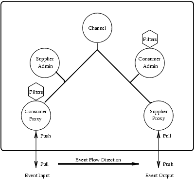

4 The Notification Service Components
4.1 The Notification Service Components
This chapter describes the Notification Service Components and how they interact.
Components
There are seven components in the OMG Notification Service architecture. These are described below:
Figure 4.1: Figure 1: The Notification Service Components.
- Event Channel: acts as a factory for Administrator objects. Allows clients to set Administrative Properties.
- Supplier Administrators: acts as a factory for Proxy Consumers. Administrators are started as 'AND_OP'- or 'OR_OP'-type, which determines if events must be validated using both the Administrators associated Filter and/or its Proxy children Filters.
- Consumer Administrators: acts in the same way as Supplier Administrators but handle Proxy Suppliers.
- Consumer Proxy: is connected to a client application. Can be started as Pull or Push object. If the proxy is Push style the client application must push events to the Proxy, otherwise the Proxy is supposed to Pull events. The CosNotification::AdminProperties is used to set the pacing interval.
- Supplier Proxy: Acts in a similar way as the Consumer Proxy, but if started as a Push proxy it will push events to the client application.
- Filters: used to filter events. May be associated with Proxies and Administrators.
- Mapping Filters: used to override events Quality of Service settings. Can only be associated with Consumer Administrators and Proxy Suppliers.
When a Proxy is started it is set to accept CORBA::Any, CosNotification::StructuredEvent or CosNotification::EventBatch (a sequence of structured events).
If a Proxy is supposed to deliver structured events to a client application and receives an CORBA::Any event, the event is converted to a structured event with type_name set to "%ANY" and the event is stored in remainder_of_body.
If a Proxy is supposed to deliver CORBA::Any events to a client application and receives a structured event, the event is stored in an Any type. The Any Type Code will be equal to the CosNotification::StructuredEvent Type Code.